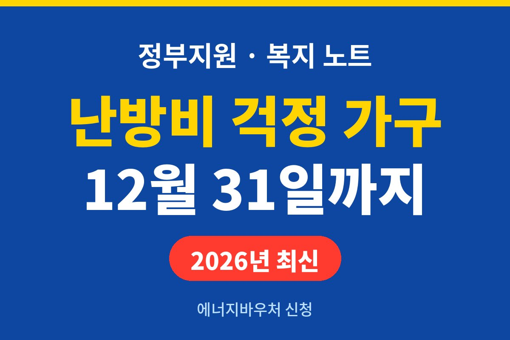
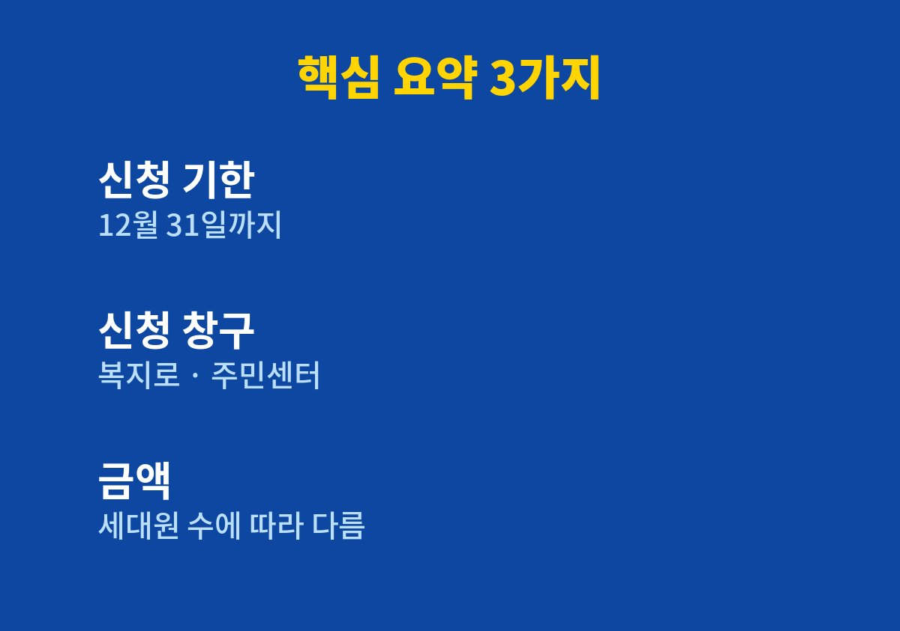
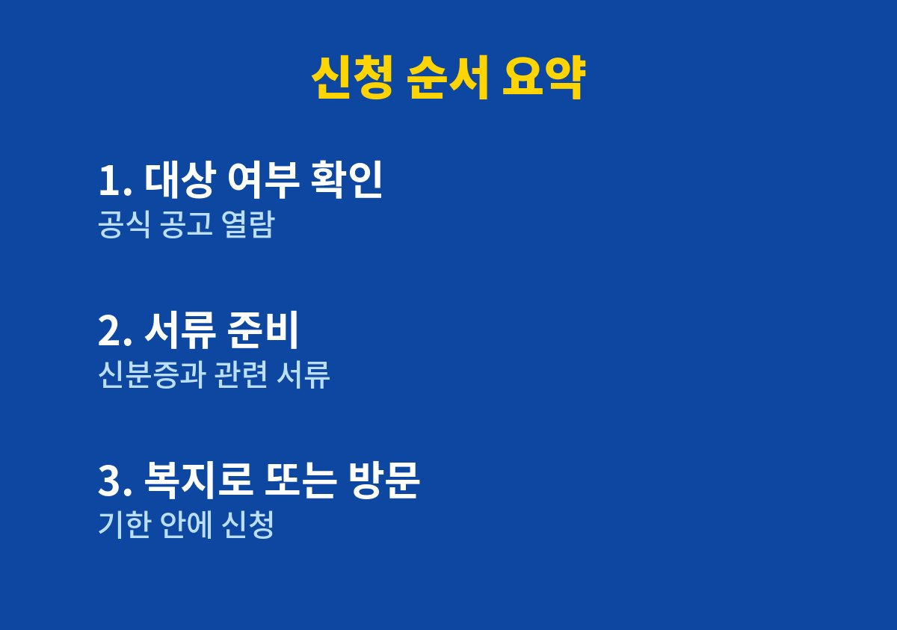

겨울이 다가오면서 전기요금과 난방비가 부담되는 가구라면 끝까지 읽어 볼 만하다.
2026년 11월 기준으로 검색된 안내를 바탕으로 에너지바우처 신청 기한이 12월 31일까지라는 점과 대상 확인 방법을 정리했다.
가족과 겨울 난방비 이야기를 하다가 궁금해서 찾아보며 정리한 내용이며, 제도는 바뀔 수 있으므로 정확한 요건은 공식 공고에서 확인해야 한다.
에너지바우처는 소득이 낮은 가구가 전기, 도시가스, 지역난방, 등유 같은 에너지를 쓰는 데 드는 비용을 돕기 위한 제도로 알려져 있다.
해마다 겨울을 앞두고 신청 안내가 나오기 때문에 시기를 놓치지 않는 것이 중요하다.
대상이라고 해서 자동으로 지급되는 것이 아니라 직접 신청해야 하는 경우가 많다.
바쁘게 지내다 보면 신청 기한이 지나 버려서 뒤늦게 알게 되는 사례도 있다.
일반적으로 생계급여나 의료급여 같은 수급 자격이 있는 가구 가운데 노인, 영유아, 장애인, 임산부, 중증질환자 같은 세대원이 포함된 경우가 대상으로 안내된다.
다만 세부 요건은 해마다 달라질 수 있어서 이 글의 설명만으로 대상 여부를 단정해서는 안 된다.

| 항목 | 내용 |
| 신청 기한 | 12월 31일까지로 안내됨 |
| 신청 창구 | 복지로 또는 주민센터 |
| 지원 금액 | 세대원 수에 따라 달라 공식 공고 확인 필요 |
| 정확한 대상 요건 | 공식 공고에서 확인 필요 |
표에서 금액과 요건을 확인이 필요한 항목으로 둔 것은 정확하지 않은 숫자를 적지 않기 위해서다.
신청은 복지로 사이트나 앱을 통해 온라인으로 할 수 있고, 주소지 관할 주민센터를 직접 방문하는 방법도 있다.
온라인이 어렵다면 가족이 대신 알아봐 주거나 주민센터에 문의하는 것이 가장 정확하다.
신청 대행을 내세우며 개인정보나 수수료를 요구하는 경우는 의심해야 한다.
공식 창구가 아닌 곳에서 신분증 사진이나 계좌 정보를 보내라고 하면 응하지 않는 것이 안전하다.
신청이 끝났다고 해서 모든 과정이 끝나는 것은 아니다.
바우처는 전기나 가스처럼 어떤 에너지를 어떤 방식으로 차감해서 쓰는지 안내가 따로 있으므로, 선정되면 사용 방법과 사용 가능한 기간을 반드시 확인해야 한다.
기간 안에 쓰지 않으면 남은 금액을 쓰지 못할 수 있어서 겨울이 오기 전에 미리 알아 두는 것이 좋다.
인터넷 사용이 익숙하지 않은 어르신은 이런 안내를 접하기 어려운 경우가 많다.
가까이 사는 부모님이나 이웃이 있다면 주민센터에 문의해 보시라고 한마디 건네는 것만으로도 큰 도움이 될 수 있다.
제도를 알고도 신청 기한을 놓치는 일이 없도록 가족끼리 서로 챙기는 습관이 필요하다고 느꼈다.

1. 복지로나 주민센터 안내에서 올해 에너지바우처 공고를 먼저 확인한다.
2. 우리 가구가 대상 조건에 해당하는지 공식 기준으로 살펴본다.
3. 신분증과 안내된 서류가 무엇인지 미리 준비한다.
4. 복지로 온라인이나 주민센터 방문으로 기한 안에 신청한다.
5. 신청 후 처리 결과와 사용 방법을 공식 안내로 다시 확인한다.
에너지바우처는 겨울을 나는 가구에 도움이 될 수 있는 제도이지만 모든 가구가 받을 수 있는 것은 아니다.
이 글은 검색으로 확인된 신청 기한과 일반적인 안내를 정리한 것이므로, 대상 여부와 금액은 반드시 공식 공고로 확인해야 한다.
주변에 난방비가 걱정되는 부모님이나 이웃이 있다면 신청 기한이 지나기 전에 이 내용을 한 번 전해 주는 것도 좋은 방법이다.
기한이 12월 말까지로 안내되어 있으니 이번 달 안에 미리 확인해 두면 마음이 한결 편해진다.
※ 2026년 11월 기준 공개된 정보를 정리한 글이며, 정확한 대상 요건·금액·신청 기간은 복지로·정부24·관할 주민센터의 공식 공고를 확인하시길 바란다.